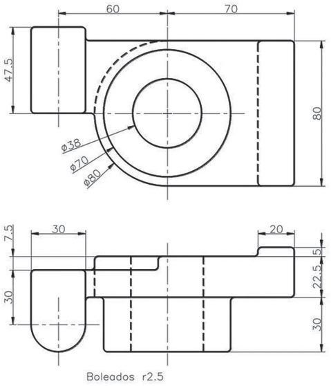

A escolha dos materiais e processos de produção corretos é fundamental para o sucesso de qualquer
projeto de produto bem como para sua adequada representação e o desenho técnico constitui ferramenta
importante no âmbito da execução do projeto. A seguir, na Figura 1, apresenta-se o desenho técnico de
uma peça para o processo 1 e, na Figura 2, mostra-se o desenho técnico dessa peça para o processo 2.
Figura 1 - desenho técnico de peça para processo 1.

Figura 2 - desenho técnico de peça para processo 2.

Silva, A.; Ribeiro, C. T.; Dias, J.; Sousa, L. Desenho Técnico Moderno. São Paulo: Grupo Gen-LTC, 2000 (adaptado).
Com base nas figuras apresentadas, que deverão resultar em uma peça que necessita passar por dois
processos de fabricação diferentes, assinale a opção em que se identifica a peça em questão e se descreve
corretamente cada um dos processos.
-
Trata-se de uma peça desenvolvida em um compósito polimérico; por meio do processo 1 se fará uso
do desenho técnico apresentado na Figura 1 para a realização de injeção; no processo 2, será feita a
usinagem, representada no desenho técnico da Figura 2.
-
Trata-se de uma peça desenvolvida em material metálico; por meio do processo 1 se fará uso do
desenho técnico apresentado na Figura 1 para a realização de fundição em molde perdido; no processo
2, será realizada a usinagem, utilizando-se do desenho técnico mostrado na Figura 2.
-
Trata-se de uma peça desenvolvida em material cerâmico; por meio do processo 1 se fará uso do
desenho técnico apresentado na Figura 1 para a realização de sinterização; no processo 2 será realizado
o torneamento, fazendo-se uso do desenho técnico previsto na Figura 2.
-
Trata-se de uma peça desenvolvida em material polimérico; por meio do processo 1 se fará uso do
desenho técnico apresentado na Figura 1 para a realização de injeção; no processo 2 apresenta-se a
peça final após a contração, por meio do desenho técnico exposto na Figura 2.
-
Trata-se de uma peça desenvolvida em material vítreo; por meio do processo 1 se fará uso do desenho
técnico apresentado na Figura 1 para a realização de moldagem por sopro em molde bipartido; no
processo 2, será realizada a modelagem por compressão, utilizando-se do desenho técnico previsto
na Figura 2.